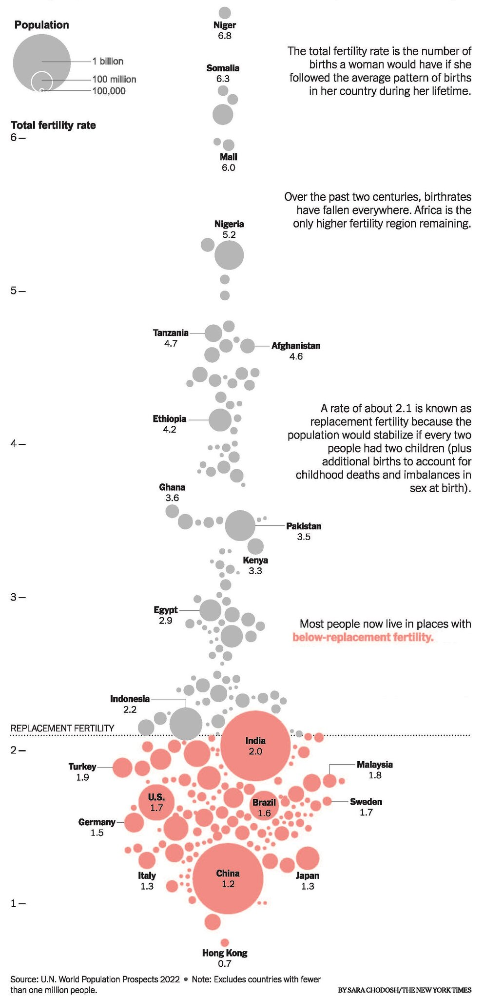

library(tidyverse)
library(knitr)
library(readxl)
library(dplyr)
library(tibble)
library(ggbeeswarm)
library(ggplot2)
library(sf)
library(rnaturalearth)AAI1001-Data Engineering and Visualization Project Proposal
In this project proposal document, the following RStudio packages will be utilised:
Team Project Proposal
Visualizing global fertility rates against country populations from U.N. World Population Prospects 2022.
Section
Our project proposal comprises of the following sections:
Original Data Visualization from New York Times
The chosen data visualisation Figure 1 is a bubble chart from the U.N. World Population Prospects 2022, showing global fertility rates against country populations. The size of each bubble corresponds to the population of the country, while the position on the vertical axis indicates the total fertility rate, which is the number of births a woman would have if she followed the average pattern of births in her country during her lifetime.
The significance of this visualisation lies in its clear depiction of a key demographic indicator: the total fertility rate (TFR). Sarah Chadorsh from New York Times illustrates a fundamental shift in population trends, where most of the world now has below-replacement fertility, meaning that the average number of children per woman is less than the number needed to maintain the current population level. A rate of about 2.1 children per woman is considered replacement level fertility, taking into account additional births needed to compensate for child mortality and sex ratio imbalances at birth.
This graph also highlights the contrast between countries with high fertility rates, primarily in Africa, and those with low rates, such as in Europe and East Asia. This information is crucial for understanding future demographic shifts, challenges of population decline, issues of an aging population, and the economic and social policy adjustments that might be needed to accommodate these changes
The chart’s significance is in demonstrating these contrasting trends and their implications for population growth, economic policy, and social change.
Countries fertility rate
knitr::include_graphics("PopulationGraph.jpeg")
Critical Assessment of the Original Visualization
The graphical representation aims to exhibit three variables: country population (quantitative), fertility rate (quantitative), and the categorization of fertility rates with respect to the replacement level (categorical). The choice to depict population through bubble size is judicious, providing an immediate visual cue to the viewer about the relative population sizes among countries.
Employing the y-axis for the fertility rate is appropriate and traditional, offering a straightforward interpretation of fertility rates in comparison to one another. The color coding to distinguish countries below and above the replacement fertility rate is an effective use of visual contrast, aiding rapid differentiation.
Furthermore, the annotated threshold for replacement fertility lends crucial context, clarifying the pivotal fertility rate at which a population replaces itself from one generation to the next without external influences.
We have analysed the graph and listed out it strengths and weaknesses:
Strengths:
Colour Contrast: The graph effectively uses color to differentiate between countries with below-replacement and above-replacement fertility rates. Countries below the replacement level are highlighted in red, facilitating quick visual identification.
Bubble Size for Population Comparison: Varying bubble sizes offer a visual comparison of country populations, allowing viewers to quickly discern which countries have larger or smaller populations relative to others.
Y-Axis for Fertility Rates: The y-axis is clearly labeled to indicate fertility rates, making it easy for viewers to understand the fertility rate of each country in relation to others.
Areas for Improvement:
Data Points Beyond Y-Axis: Some data points exceed the bounds of the y-axis, potentially leading to confusion or misinterpretation of the data.
Alignment on Y-Axis: Countries sharing the same fertility rate are not perfectly aligned horizontally, complicating direct comparisons as shown in Figure 2.
Population Size Precision: Precisely gauging population sizes from bubble sizes is challenging, as the legend indicates only three population bubble sizes: 100,000; 100 million; and 1 billion shown in Figure 1.
Inconsistent Colour Coding: Inconsistencies in colour coding are observed, where some countries below the replacement fertility rate are not marked in red, leading to potential misinterpretation of the data shown in Figure 2 .
Inconsistent Labelling: Bubbles without labels offer a hover-on description showing the specific country’s fertility rate, but those labeled with the country name lack this option limiting data accessibility. An example would be the India’s bubble in Figure 2, where there is no hover on effect.
Country Identification: Identifying specific countries quickly is challenging due to the graph’s density and lack of an interactive element for highlighting or searching for a country.
Visibility of Population Size: The overlap and varying sizes of bubbles obscure the actual population size for each country.
Hover Functionality: The absence of hover functionality for labeled bubbles restricts viewers from accessing additional information easily, diminishing the visualization’s interactivity and educational value.
Missing Population Data on Hover: When hovering over bubbles, population size or other pertinent data is not displayed, which would have been beneficial for viewers seeking detailed information from Figure 2.
India Vs Kuwait fertility rate
knitr::include_graphics("kuwait-lebanon-fertility rate.png")
Describe any improvements you intend to incorporate.
Implement a World Map overlay to contextualize fertility rate and population data geographically, enhancing usability and comprehension of regional demographic trends.
Utilize a sequential ColorBrewer palette (Colorbrewer 2.0 2013) for each country to represent fertility rates, allowing easy recognition of demographic variations. In addition, the assessment of suitability for colorblind viewers will be evaluated with the ‘colorblindcheck’ package in R to ensure accessibility.
Introduce semi-transparent hover tooltips to provide detailed statistics for each country, namely fertility rate and population size, without obscuring the map.
Add a zoom function that activates upon clicking a country, enabling a detailed examination of demographic details and facilitating an in-depth understanding of fertility rates.
Integrate a search function to quickly locate and examine data for specific countries, enabling personalized data exploration.
Data Cleaning
Read xlsx UN_PPP2022
Datasets Used include: Demographic Indicators from : https://population.un.org/wpp/Download/Standard/MostUsed/ Which include total population as of 1 January in the thousands
New York Times based their visualization on data by UN World Population Prospects 2022, available in CSV format with each row representing a country and its demographic statistics like population, fertility rate. The data is available in the following link: https://population.un.org/wpp/Download/Standard/MostUsed/. Below is a summary of the data using glimpse() and summary()
Glimpsed Data
glimpse(UN_PPP2022)Rows: 20,596
Columns: 65
$ Index <chr> …
$ Variant <chr> …
$ `Region, subregion, country or area *` <chr> …
$ Notes <chr> …
$ `Location code` <chr> …
$ `ISO3 Alpha-code` <chr> …
$ `ISO2 Alpha-code` <chr> …
$ `SDMX code**` <chr> …
$ Type <chr> …
$ `Parent code` <chr> …
$ Year <chr> …
$ `Total Population, as of 1 January (thousands)` <chr> …
$ `Total Population, as of 1 July (thousands)` <chr> …
$ `Male Population, as of 1 July (thousands)` <chr> …
$ `Female Population, as of 1 July (thousands)` <chr> …
$ `Population Density, as of 1 July (persons per square km)` <chr> …
$ `Population Sex Ratio, as of 1 July (males per 100 females)` <chr> …
$ `Median Age, as of 1 July (years)` <chr> …
$ `Natural Change, Births minus Deaths (thousands)` <chr> …
$ `Rate of Natural Change (per 1,000 population)` <chr> …
$ `Population Change (thousands)` <chr> …
$ `Population Growth Rate (percentage)` <chr> …
$ `Population Annual Doubling Time (years)` <chr> …
$ `Births (thousands)` <chr> …
$ `Births by women aged 15 to 19 (thousands)` <chr> …
$ `Crude Birth Rate (births per 1,000 population)` <chr> …
$ `Total Fertility Rate (live births per woman)` <chr> …
$ `Net Reproduction Rate (surviving daughters per woman)` <chr> …
$ `Mean Age Childbearing (years)` <chr> …
$ `Sex Ratio at Birth (males per 100 female births)` <chr> …
$ `Total Deaths (thousands)` <chr> …
$ `Male Deaths (thousands)` <chr> …
$ `Female Deaths (thousands)` <chr> …
$ `Crude Death Rate (deaths per 1,000 population)` <chr> …
$ `Life Expectancy at Birth, both sexes (years)` <chr> …
$ `Male Life Expectancy at Birth (years)` <chr> …
$ `Female Life Expectancy at Birth (years)` <chr> …
$ `Life Expectancy at Age 15, both sexes (years)` <chr> …
$ `Male Life Expectancy at Age 15 (years)` <chr> …
$ `Female Life Expectancy at Age 15 (years)` <chr> …
$ `Life Expectancy at Age 65, both sexes (years)` <chr> …
$ `Male Life Expectancy at Age 65 (years)` <chr> …
$ `Female Life Expectancy at Age 65 (years)` <chr> …
$ `Life Expectancy at Age 80, both sexes (years)` <chr> …
$ `Male Life Expectancy at Age 80 (years)` <chr> …
$ `Female Life Expectancy at Age 80 (years)` <chr> …
$ `Infant Deaths, under age 1 (thousands)` <chr> …
$ `Infant Mortality Rate (infant deaths per 1,000 live births)` <chr> …
$ `Live Births Surviving to Age 1 (thousands)` <chr> …
$ `Under-Five Deaths, under age 5 (thousands)` <chr> …
$ `Under-Five Mortality (deaths under age 5 per 1,000 live births)` <chr> …
$ `Mortality before Age 40, both sexes (deaths under age 40 per 1,000 live births)` <chr> …
$ `Male Mortality before Age 40 (deaths under age 40 per 1,000 male live births)` <chr> …
$ `Female Mortality before Age 40 (deaths under age 40 per 1,000 female live births)` <chr> …
$ `Mortality before Age 60, both sexes (deaths under age 60 per 1,000 live births)` <chr> …
$ `Male Mortality before Age 60 (deaths under age 60 per 1,000 male live births)` <chr> …
$ `Female Mortality before Age 60 (deaths under age 60 per 1,000 female live births)` <chr> …
$ `Mortality between Age 15 and 50, both sexes (deaths under age 50 per 1,000 alive at age 15)` <chr> …
$ `Male Mortality between Age 15 and 50 (deaths under age 50 per 1,000 males alive at age 15)` <chr> …
$ `Female Mortality between Age 15 and 50 (deaths under age 50 per 1,000 females alive at age 15)` <chr> …
$ `Mortality between Age 15 and 60, both sexes (deaths under age 60 per 1,000 alive at age 15)` <chr> …
$ `Male Mortality between Age 15 and 60 (deaths under age 60 per 1,000 males alive at age 15)` <chr> …
$ `Female Mortality between Age 15 and 60 (deaths under age 60 per 1,000 females alive at age 15)` <chr> …
$ `Net Number of Migrants (thousands)` <chr> …
$ `Net Migration Rate (per 1,000 population)` <chr> …Summary of Data
summary(UN_PPP2022) Index Variant Region, subregion, country or area *
Length:20596 Length:20596 Length:20596
Class :character Class :character Class :character
Mode :character Mode :character Mode :character
Notes Location code ISO3 Alpha-code ISO2 Alpha-code
Length:20596 Length:20596 Length:20596 Length:20596
Class :character Class :character Class :character Class :character
Mode :character Mode :character Mode :character Mode :character
SDMX code** Type Parent code Year
Length:20596 Length:20596 Length:20596 Length:20596
Class :character Class :character Class :character Class :character
Mode :character Mode :character Mode :character Mode :character
Total Population, as of 1 January (thousands)
Length:20596
Class :character
Mode :character
Total Population, as of 1 July (thousands)
Length:20596
Class :character
Mode :character
Male Population, as of 1 July (thousands)
Length:20596
Class :character
Mode :character
Female Population, as of 1 July (thousands)
Length:20596
Class :character
Mode :character
Population Density, as of 1 July (persons per square km)
Length:20596
Class :character
Mode :character
Population Sex Ratio, as of 1 July (males per 100 females)
Length:20596
Class :character
Mode :character
Median Age, as of 1 July (years)
Length:20596
Class :character
Mode :character
Natural Change, Births minus Deaths (thousands)
Length:20596
Class :character
Mode :character
Rate of Natural Change (per 1,000 population) Population Change (thousands)
Length:20596 Length:20596
Class :character Class :character
Mode :character Mode :character
Population Growth Rate (percentage) Population Annual Doubling Time (years)
Length:20596 Length:20596
Class :character Class :character
Mode :character Mode :character
Births (thousands) Births by women aged 15 to 19 (thousands)
Length:20596 Length:20596
Class :character Class :character
Mode :character Mode :character
Crude Birth Rate (births per 1,000 population)
Length:20596
Class :character
Mode :character
Total Fertility Rate (live births per woman)
Length:20596
Class :character
Mode :character
Net Reproduction Rate (surviving daughters per woman)
Length:20596
Class :character
Mode :character
Mean Age Childbearing (years) Sex Ratio at Birth (males per 100 female births)
Length:20596 Length:20596
Class :character Class :character
Mode :character Mode :character
Total Deaths (thousands) Male Deaths (thousands) Female Deaths (thousands)
Length:20596 Length:20596 Length:20596
Class :character Class :character Class :character
Mode :character Mode :character Mode :character
Crude Death Rate (deaths per 1,000 population)
Length:20596
Class :character
Mode :character
Life Expectancy at Birth, both sexes (years)
Length:20596
Class :character
Mode :character
Male Life Expectancy at Birth (years) Female Life Expectancy at Birth (years)
Length:20596 Length:20596
Class :character Class :character
Mode :character Mode :character
Life Expectancy at Age 15, both sexes (years)
Length:20596
Class :character
Mode :character
Male Life Expectancy at Age 15 (years)
Length:20596
Class :character
Mode :character
Female Life Expectancy at Age 15 (years)
Length:20596
Class :character
Mode :character
Life Expectancy at Age 65, both sexes (years)
Length:20596
Class :character
Mode :character
Male Life Expectancy at Age 65 (years)
Length:20596
Class :character
Mode :character
Female Life Expectancy at Age 65 (years)
Length:20596
Class :character
Mode :character
Life Expectancy at Age 80, both sexes (years)
Length:20596
Class :character
Mode :character
Male Life Expectancy at Age 80 (years)
Length:20596
Class :character
Mode :character
Female Life Expectancy at Age 80 (years)
Length:20596
Class :character
Mode :character
Infant Deaths, under age 1 (thousands)
Length:20596
Class :character
Mode :character
Infant Mortality Rate (infant deaths per 1,000 live births)
Length:20596
Class :character
Mode :character
Live Births Surviving to Age 1 (thousands)
Length:20596
Class :character
Mode :character
Under-Five Deaths, under age 5 (thousands)
Length:20596
Class :character
Mode :character
Under-Five Mortality (deaths under age 5 per 1,000 live births)
Length:20596
Class :character
Mode :character
Mortality before Age 40, both sexes (deaths under age 40 per 1,000 live births)
Length:20596
Class :character
Mode :character
Male Mortality before Age 40 (deaths under age 40 per 1,000 male live births)
Length:20596
Class :character
Mode :character
Female Mortality before Age 40 (deaths under age 40 per 1,000 female live births)
Length:20596
Class :character
Mode :character
Mortality before Age 60, both sexes (deaths under age 60 per 1,000 live births)
Length:20596
Class :character
Mode :character
Male Mortality before Age 60 (deaths under age 60 per 1,000 male live births)
Length:20596
Class :character
Mode :character
Female Mortality before Age 60 (deaths under age 60 per 1,000 female live births)
Length:20596
Class :character
Mode :character
Mortality between Age 15 and 50, both sexes (deaths under age 50 per 1,000 alive at age 15)
Length:20596
Class :character
Mode :character
Male Mortality between Age 15 and 50 (deaths under age 50 per 1,000 males alive at age 15)
Length:20596
Class :character
Mode :character
Female Mortality between Age 15 and 50 (deaths under age 50 per 1,000 females alive at age 15)
Length:20596
Class :character
Mode :character
Mortality between Age 15 and 60, both sexes (deaths under age 60 per 1,000 alive at age 15)
Length:20596
Class :character
Mode :character
Male Mortality between Age 15 and 60 (deaths under age 60 per 1,000 males alive at age 15)
Length:20596
Class :character
Mode :character
Female Mortality between Age 15 and 60 (deaths under age 60 per 1,000 females alive at age 15)
Length:20596
Class :character
Mode :character
Net Number of Migrants (thousands) Net Migration Rate (per 1,000 population)
Length:20596 Length:20596
Class :character Class :character
Mode :character Mode :character Relevant columns for data processing include:
Country: Name of the country
Fertility Rate: The average number of children per woman
Population: Population size of a country by the thousands (eg: 1 = 1 Thousand people)
Country Code: IS0-3 Format, Country abbreviated in the form “BDI” (Burundi), “COM” (Comoros), etc.
Data Cleaning Process
The data was cleaned by removing the first 15 rows, setting the first row as the column names, removing all rows where the ISO3 Alpha-code is NA, keeping only rows where the year is 2021, and keeping only the columns “Region, subregion, country or area”, “Total Fertility Rate (live births per woman)”
This is because the data included multitude of other information that was not relevant, to extract out purely each countries information, we used only rows where ISO3 Alpha-code was not NA, and the year was 2021. We also renamed the columns to be more readable and arranged the data by fertility rate.
# A tibble: 6 × 4
Country `Fertility Rate` Population `Country Code`
<chr> <chr> <chr> <chr>
1 Niger 6.82 24785.587 NER
2 Somalia 6.3120000000000003 16801.1699… SOM
3 Chad 6.2549999999999999 16910.2180… TCD
4 Democratic Republic of the Congo 6.1559999999999997 94374.3790… COD
5 Central African Republic 5.9779999999999998 5414.01400… CAF
6 Mali 5.9560000000000004 21561.2989… MLI Conclusion
The project aims to elevate the bubble plot graph from The New York Times which visualises population size versus fertility rate. The data-set has been sufficiently cleaned and is ready for the next stage of the project. The RStudio packages ‘ggplot2’ and ‘leaflet’ will be used to create a visually appealing and interactive chloropleth world-map.
By incorporating colour schema into a world map, it makes the graph more aesthetically appealing to audiences. Hence, this allows the audiences to be able to explore regional trends and patterns better, enhancing the graph’s analytical depth and also narrative impact.
References
- Network, T. L. (2023, November 9). What’s Going On in This Graph? | Global Population Growth and Decline. The New York Times. Global Population Growth and Decline. The New York Times https://www.nytimes.com/2023/11/09/learning/whats-going-on-in-this-graph-nov-15-2023.html
- Cynthia Brewer, Mark Harrower and The Pennsylvania State University. (2013). Colorbrewer 2.0. ColorBrewer. https://colorbrewer2.org/#type=sequential&scheme=BuGn&n=3